NSSC 2026 · Data Analytics · IIT Kharagpur
OrbitIQ
Sanity-pass findings
source_image_id and every id has metadata (checked with assert).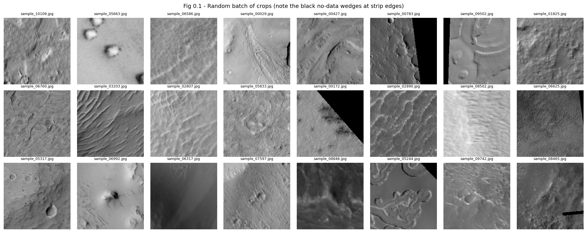
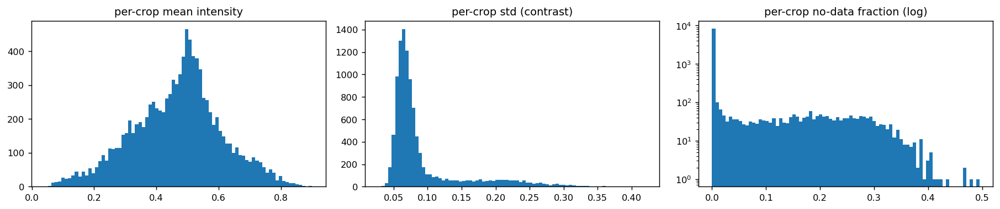
v1 and v2 showed that the black map-projection wedges, which are normal data, dominated both the reconstruction loss and the latent space (see changelog). From v3 on, each crop gets a no-data mask. A pixel is masked if it belongs to a near-black (≤ 5) region that
The mask is dilated by 2 px to cover JPEG ringing along the wedge edge. Masked pixels are filled with the median of the crop's valid pixels, which gives a flat, texture-free region with no razor-sharp edge. They are also excluded from the loss and from every reconstruction-error metric and heatmap. The filled image, not the original, is what the v3 encoder sees.
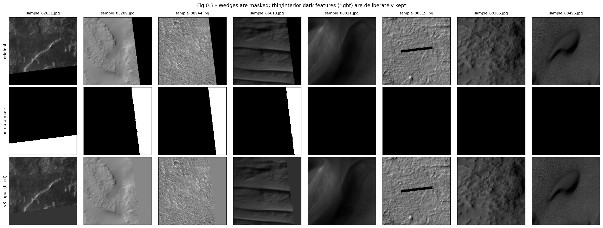
Design. A convolutional autoencoder written from scratch in PyTorch (no pretrained weights, no transfer learning).
Linear → fixed-length 1-D
latent vector of 256 floats (the Phase 2 input). The global linear layer lets every latent
coordinate combine evidence from the whole crop, so the code describes what kind of scene this
is (terrain type, texture class, relief).Linear (v4: 1×1 conv) back to the 8×8×256 map → five ×2
transposed-conv stages to 256×256, centre-crop to 227×227, sigmoid. Cropping (rather than odd
output-padding) keeps every stage a clean ×2.CONFIGS).The latent size trades reconstruction fidelity (a larger code keeps more detail) against outlier separability. An Isolation Forest splits on randomly chosen coordinates. If many latent dimensions carry redundant or near-constant information, most random splits are wasted and the isolation depth of true outliers gets diluted. We trained the final configuration with d ∈ {64, 128, 256, 512} (short schedule) and measured three things:
| latent_dim | epochs | val_mse | val_ssim | pca90 | tail_ratio | n_flag_mad35 |
|---|---|---|---|---|---|---|
| 64 | 12 | 0.0027 | 0.6822 | 30 | 10.8869 | 868 |
| 128 | 12 | 0.0029 | 0.6781 | 8 | 9.5130 | 641 |
| 256 | 12 | 0.0023 | 0.6920 | 85 | 11.0490 | 828 |
| 512 | 12 | 0.0023 | 0.6961 | 109 | 10.4945 | 687 |
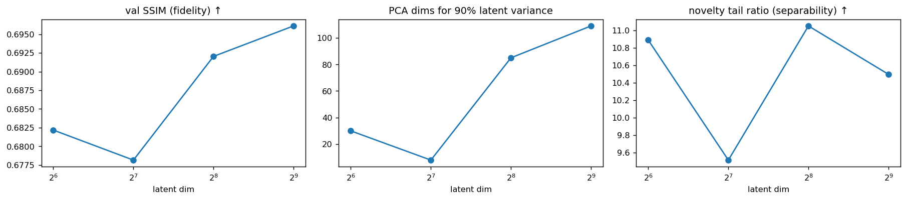
Choice: d = 256. The sweep uses a short 12-epoch schedule and a single seed, so its flagged counts are not comparable with the fully trained model and are shown only for completeness. The differences are indicative, not conclusive.
So 256 is the knee of the trade-off: the smallest code at which reconstruction fidelity is essentially saturated and the separability proxy is at its maximum.
Loss design. v1 used pure MSE. MSE is minimised by the conditional mean, so when fine texture
(dune ripples, crater rims, polygonal ground) is uncertain the decoder outputs a blurred average.
The v1 reconstructions show this clearly (Fig 1.2). From v2 on, the objective is
0.84·(1 − SSIM) + 0.16·L1 + 0.1·Gradient-L1, computed only on valid (non-no-data) pixels from v3 on.
Its fully differentiable terms (weights in CONFIGS) complement each other:
No perceptual loss is used, because every perceptual network we could use would be pretrained, and that is banned.
What the iterations taught us about this loss. Switching from MSE (v1) to this combination (v2) sharpened crater rims and scarps, but it did not recover dune-ripple texture: held-out SSIM only went from 0.705 to 0.707. The binding constraint is the bottleneck, not the loss. 256 floats for 51,529 pixels cannot store the exact phase of a ripple field, and a loss cannot recreate information the code has discarded. We keep the structural loss because it spends the unavoidable error on texture detail rather than on structure. Its edge sensitivity, however, made the network lock onto the razor-sharp edges of the no-data wedges (v2's novelty correlated 0.66 with the no-data share). That is why, from v3 on, every term is computed on valid pixels only (Section 0.2).
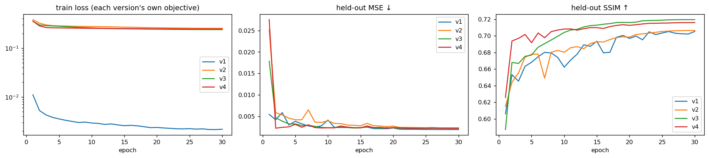
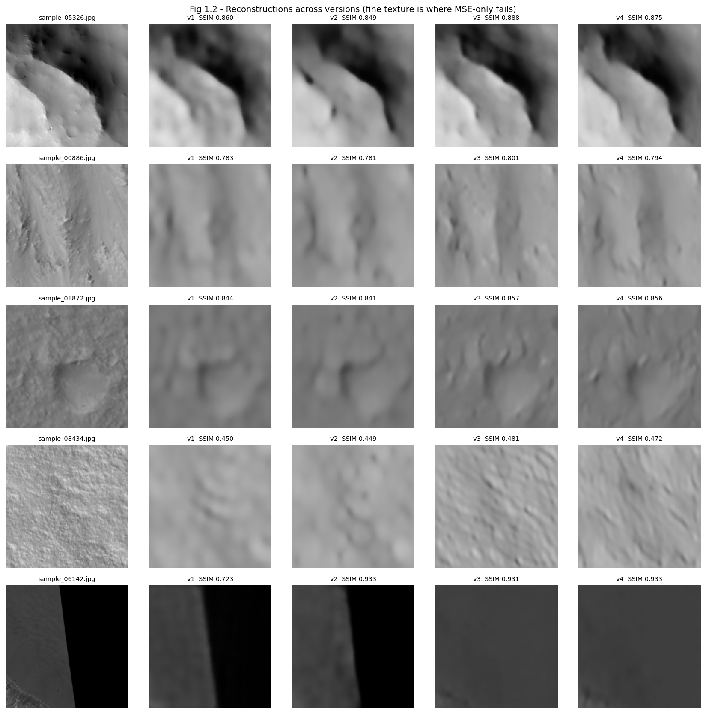
PCA (50 components on standardised latents) followed by t-SNE (perplexity 40). Colouring by simple image properties the model never saw as labels shows which factors of variation the latent space organises. This is a qualitative diagnostic only, not proof of geological clusters.
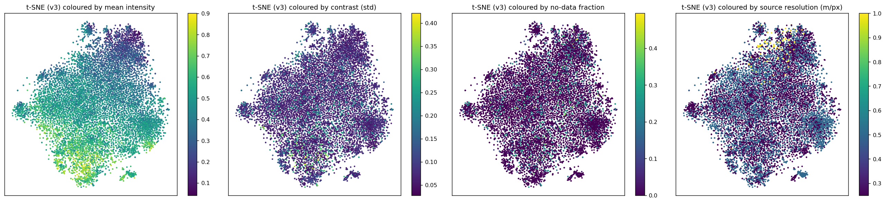
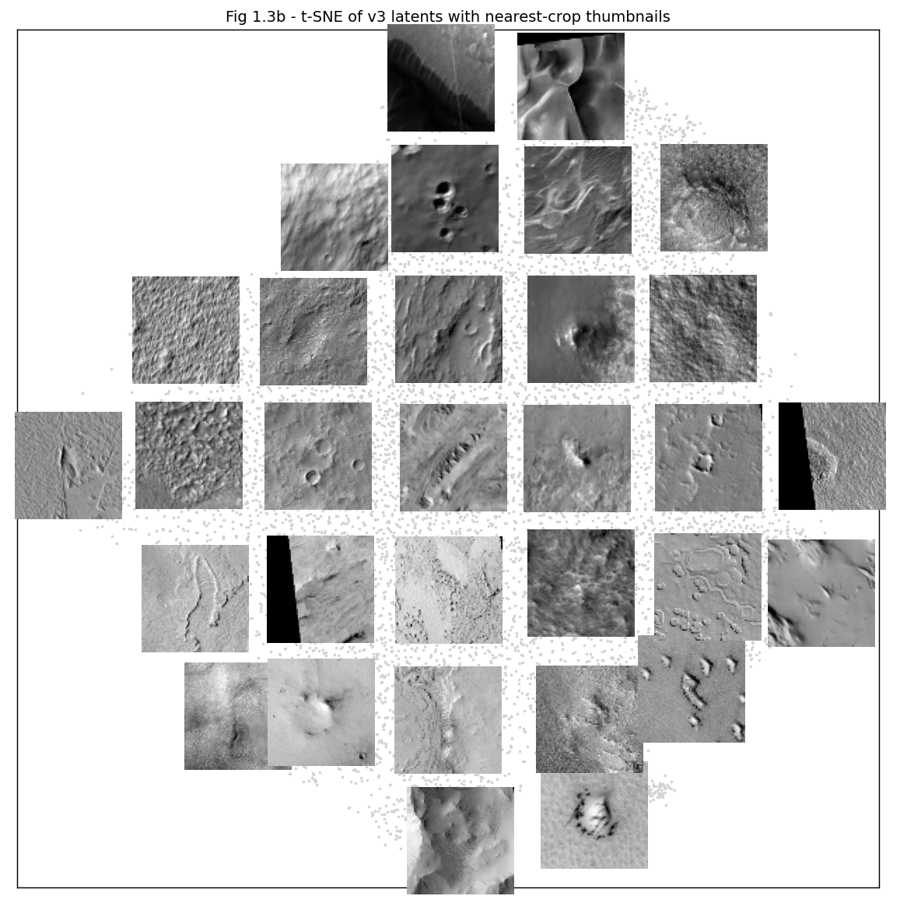
Reading the map (visual interpretation, not labels).
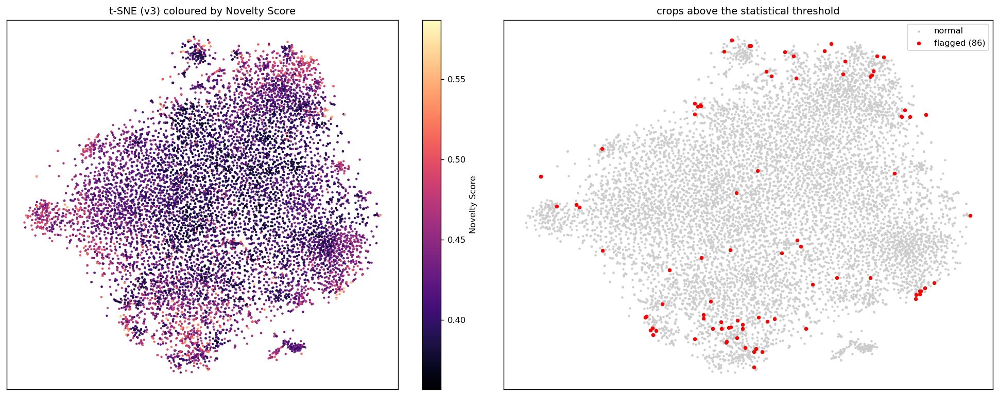
The Isolation Forest is fitted on the 1-D latent vectors of all crops (unsupervised: there is no "clean" training set). We use 500 trees and 256-sample sub-sampling (the original paper's recommended ψ), and average 5 forests with different seeds to reduce the variance of the ranking.
Score convention. sklearn's score_samples returns the negated anomaly score (higher = more
normal). We negate it, so our Novelty Score = s(x, n) ∈ (0, 1] from Liu et al. (2008), and higher
= more anomalous. This is the competition convention, and it is verified below by the sign of the
correlation with sklearn's decision_function.
We want the boundary to come from the shape of the observed score distribution, not from an assumed count. First we test whether a Gaussian μ + kσ rule is even appropriate (skewness, kurtosis, D'Agostino K² test, Q-Q plot). Then we compare three distribution-driven rules:
| mean | std | median | mad | skew | excess_kurtosis | normality_p |
|---|---|---|---|---|---|---|
| 0.4229 | 0.0345 | 0.4165 | 0.0217 | 0.9619 | 0.9827 | 0.0000 |
| method | threshold | n_flagged |
|---|---|---|
| Modified z-score (median + 3.5 MAD/0.6745) | 0.5293 | 86 |
| Kneedle elbow of sorted scores | 0.4597 | 1513 |
| 2-component GMM posterior = 0.5 | 0.4374 | 2986 |
| mu + 3 sigma (assumes Gaussian - rejected) | 0.5264 | 95 |
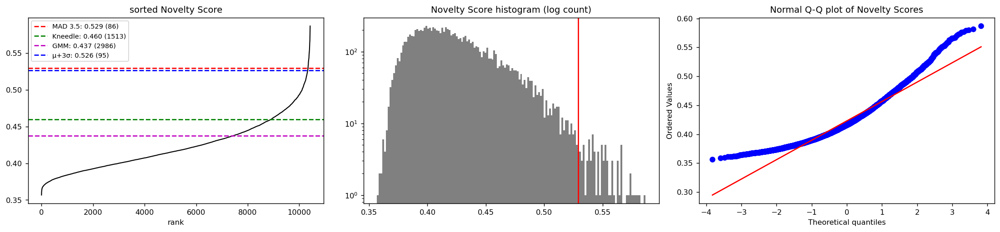
Final threshold = 0.5293 → 86 crops flagged
sklearn's IsolationForest(contamination=...) only changes the offset used by predict() to produce
±1 labels. It has no effect on score_samples(), which is all we use. We set
contamination="auto" (sklearn's default, offset −0.5), and we never call predict(). The final
anomaly count is determined solely by the statistical threshold on the continuous Novelty Score
above, independently of any assumed contamination fraction.
Each scored crop is joined to source_image_metadata.csv through its source_image_id (from
crop_metadata_index.csv), many-to-one and validated. We then ask whether flags cluster in
particular observations, latitudes, illumination conditions, seasons or resolutions.
Metadata resolution. The provided coordinates are quantised. Latitude is on a 5° grid from −45° to 60°, plus the two poles (±90°), and longitude takes only two values, 0° or 180°E (29 and 143 sources). A longitude-latitude map would collapse to two vertical lines, so we analyse latitude bands × the two longitudes instead of point locations. We test per-source enrichment with a one-sided binomial test against the global flag rate (Bonferroni-corrected), and test trends with rank statistics (Spearman, Kruskal-Wallis), which make no Gaussian assumption.
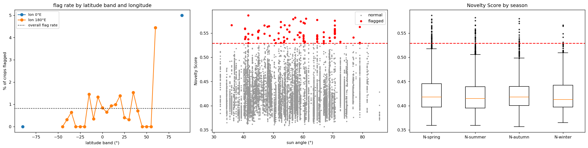
| test | value |
|---|---|
| rho_sun | rho=-0.038, p=0.00012 |
| rho_abslat | rho=0.032, p=0.0012 |
| p_season | 0.001644 |
| p_resolution | 1.055e-11 |
| p_chi2_season | 0.4758 |
| n_src_flagged | 39 |
| n_src_enriched | 4 |
| source_image_id | n | n_flag | rate | latitude | longitude | sun_angle | season | resolution | p_bonf |
|---|---|---|---|---|---|---|---|---|---|
| SRC_039 | 16 | 13 | 0.8125 | 90.0000 | 0.0000 | 70.6328 | N-summer | 0.5000 | 0.0000 |
| SRC_067 | 92 | 7 | 0.0761 | -15.0000 | 180.0000 | 64.7242 | N-spring | 0.5000 | 0.0021 |
| SRC_166 | 16 | 6 | 0.3750 | 90.0000 | 0.0000 | 60.0942 | N-spring | 0.5000 | 0.0000 |
| SRC_022 | 74 | 4 | 0.0541 | 20.0000 | 180.0000 | 41.5136 | N-spring | 0.2500 | 0.5798 |
| SRC_094 | 63 | 4 | 0.0635 | 20.0000 | 180.0000 | 66.9345 | N-autumn | 0.2500 | 0.3224 |
| SRC_140 | 62 | 4 | 0.0645 | 35.0000 | 180.0000 | 44.8556 | N-spring | 0.2500 | 0.3039 |
| SRC_131 | 67 | 3 | 0.0448 | 10.0000 | 180.0000 | 60.5405 | N-autumn | 0.5000 | 1.0000 |
| SRC_078 | 28 | 3 | 0.1071 | 15.0000 | 180.0000 | 40.4370 | N-spring | 0.2500 | 0.2713 |
| SRC_032 | 14 | 3 | 0.2143 | -5.0000 | 180.0000 | 52.4902 | N-spring | 0.2500 | 0.0329 |
| SRC_083 | 28 | 3 | 0.1071 | 0.0000 | 180.0000 | 55.3789 | N-spring | 0.2500 | 0.2713 |
Findings.
We concatenate the standardised image latent with an encoded metadata vector: z-scored sun angle, sin/cos of latitude and longitude (to respect circularity), log₂ resolution, and a one-hot season. We re-score with the same Isolation Forest settings and the same modified-z rule, then compare the flagged sets. The image-only pipeline remains the primary result.
| n_image | n_fused | overlap | jaccard | rank_corr |
|---|---|---|---|---|
| 86 | 93 | 83 | 0.8646 | 0.9921 |
Fusion changes little: 93 crops are flagged against 86 image-only, with 83 in common (Jaccard 0.86) and a rank correlation of 0.992 between the two scorings. Fusion adds 10 crops and drops 3. Two reasons explain the small effect:
Metadata is therefore most useful as we used it in 2.3, to explain flags after the fact (e.g. the polar enrichment), rather than as an input to detection.
The five highest-scoring crops within the statistically thresholded set are passed back through
the decoder. The per-pixel squared error (lightly smoothed, σ = 2 px) is shown alone and overlaid on
the original. To make the physical reading less subjective, we also compute descriptors of each
error map and image (heatmap_descriptors). Each descriptor is reported as a percentile against 500
random un-flagged crops:
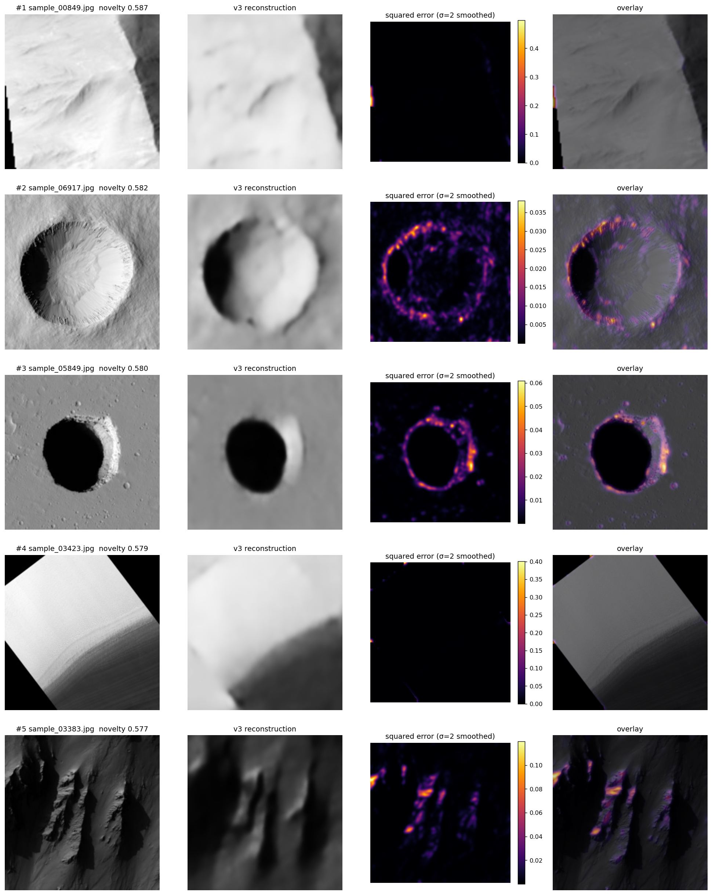
| rank | filename | source | novelty | recon_mse | concentration | line_score | seam_step | periodicity | saturation |
|---|---|---|---|---|---|---|---|---|---|
| 1 | sample_00849.jpg | SRC_022 | 0.5868 | 0.0023 | 0.6608 | 73.9428 | 0.4180 | 0.7265 | 0.0058 |
| 2 | sample_06917.jpg | SRC_122 | 0.5819 | 0.0029 | 0.2678 | 2.1512 | 0.1453 | 0.7671 | 0.0033 |
| 3 | sample_05849.jpg | SRC_008 | 0.5801 | 0.0022 | 0.5052 | 5.8550 | 0.1455 | 0.7792 | 0.1110 |
| 4 | sample_03423.jpg | SRC_128 | 0.5790 | 0.0010 | 0.7028 | 26.7748 | 0.3874 | 0.8574 | 0.0005 |
| 5 | sample_03383.jpg | SRC_067 | 0.5773 | 0.0033 | 0.5301 | 4.7143 | 0.0703 | 0.4949 | 0.0195 |
Percentile of each descriptor against 500 random normal crops:
| filename | concentration | line_score | seam_step | periodicity | saturation | mean | std |
|---|---|---|---|---|---|---|---|
| sample_00849.jpg | 99 | 100 | 100 | 89 | 99 | 100 | 100 |
| sample_06917.jpg | 33 | 18 | 96 | 92 | 99 | 83 | 100 |
| sample_05849.jpg | 93 | 83 | 96 | 93 | 100 | 44 | 100 |
| sample_03423.jpg | 99 | 99 | 100 | 98 | 87 | 87 | 100 |
| sample_03383.jpg | 94 | 74 | 78 | 66 | 100 | 1 | 98 |
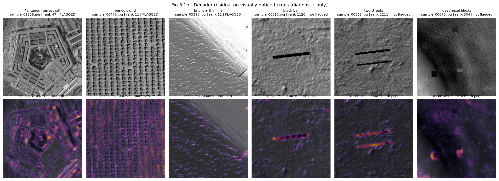
These are hypotheses, argued from the heatmap pattern, the descriptors (with percentiles against 500 normal crops) and the metadata. They are not definitive classifications.
#1 sample_00849 (SRC_022, 20° N): straight albedo boundary. Hypothesis: spliced terrain or a mosaic seam. A bright slope with gullies is cut by a straight, full-height boundary to a uniformly darker band (seam step 0.42, the 100th percentile; the crop is also brighter than every reference crop). Natural albedo contacts on Mars follow topography and are rarely ruler-straight across a whole frame. A straight contact between two unrelated surfaces is the signature of semantic splicing, or, less exotically, of a seam between two HiRISE CCD channels with mismatched gain. The reconstruction error is low (the decoder draws both halves and the boundary), so the flag comes from the rarity of the configuration in latent space, not from a failure to encode it. The only concentrated error sits on the edge of the small filled no-data wedge at the left, so part of this crop's score may be the residual no-data effect noted in the changelog.
#2 sample_06917 (SRC_122, 5° S): fresh crater filling the frame. Hypothesis: genuine, rare geology. The error forms a ring that follows the crater rim, with streaks down the inner walls. Its concentration is low (33rd percentile), spread along the whole rim. A sharp-rimmed impact crater with gullied walls, a shadowed wall and a bright floor is a high-relief, high-frequency structure that a 256-float global code can only sketch. Such large fresh craters are uncommon at this crop scale, where most crops are plains, dunes and knobby terrain. The pattern is physically coherent (the error sits exactly where relief is steepest) and does not resemble any of the injection signatures.
#3 sample_05849 (SRC_008, 25° N): crater or pit with a fully black shadow. Hypothesis: genuine steep-walled depression at the limit of the sensor's dynamic range. 11 % of the pixels are clipped at 0 (saturation at the 100th percentile). The error traces the rim and the sunlit wall, where the illuminated rock meets the clipped shadow. The shadow sits on the wall facing away from the sun, consistent with the illumination of the surrounding small craters, which argues for real topography rather than a synthetic black blob. An exposure set for the bright plain cannot record the shadowed interior, so it clips. This is either a very deep fresh crater or a collapse pit. It is rare, but Martian.
#4 sample_03423 (SRC_128, 90° N): polar layered terrain with a large filled no-data area. Hypothesis: genuine polar geology plus the residual no-data effect. The valid area is a rotated strip, with the two wedges masked and filled. It shows a bright, smooth upper surface and a darker lower surface separated by a curved scarp with fine parallel banding (periodicity at the 98th percentile). At 90° N this is the morphology of the north polar layered deposits, stacked ice and dust layers exposed on a scarp. The reconstruction error is the lowest of the top 5, so again the novelty is configurational: rare polar terrain, and an unusually large flat fill region, as discussed in the v3/v4 changelog.
#5 sample_03383 (SRC_067, 15° S): dark, low-sun rugged relief. Hypothesis: genuine massifs or ridges under oblique illumination. The frame is darker than 99 % of reference crops, and its contrast is at the 98th percentile. The error is concentrated on the thin sunlit crests, not in the shadows. Long shadows from steep spurs make a high-contrast, high-frequency pattern whose exact crest geometry the code cannot store. SRC_067 is one of the four significantly enriched sources (7 flags in 92 crops), which is what we would expect if the whole observation images unusual rugged terrain.
Beyond the top 5 (Fig 3.1b, diagnostic). The heatmap pattern separates the injected content from the rare geology above:
| heatmap pattern | examples | physical hypothesis |
|---|---|---|
| ring following a rim, error on steep walls | 06917, 05849 | real high-relief feature beyond the code's resolution (rare geology) |
| error on thin bright crests of a dark frame | 03383 | oblique illumination of rugged relief |
| low error, high novelty | 00849, 03423 | rare configuration: straight seam (splice / CCD seam) or polar terrain + large fill |
| intense error spread over the whole frame | Pentagon 09828, grid 06476 | domain shift: non-Martian content |
| error along a straight dark line | bar 00015, streaks 00503 | synthetic sensor artefact (missed by the latent) |
| version | val_mse | val_ssim | nodata_mse_ratio | pca90 | corr_nov_nodata | n_flag_mad35 | flagged_with_nodata |
|---|---|---|---|---|---|---|---|
| v1 | 0.0019 | 0.7053 | 1.0011 | 44 | 0.6347 | 1596 | 0.9655 |
| v2 | 0.0023 | 0.7065 | 1.0157 | 36 | 0.6571 | 1985 | 0.9597 |
| v3 | 0.0021 | 0.7195 | 1.1564 | 190 | 0.1100 | 86 | 0.4767 |
| v4 | 0.0022 | 0.7159 | 1.1597 | 139 | 0.0659 | 510 | 0.3353 |
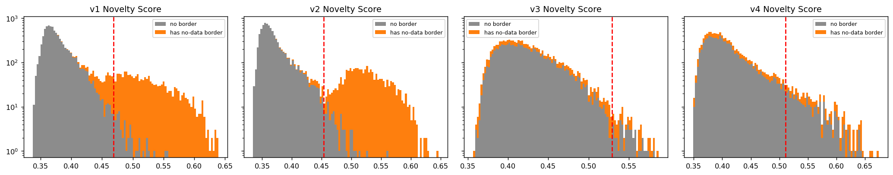
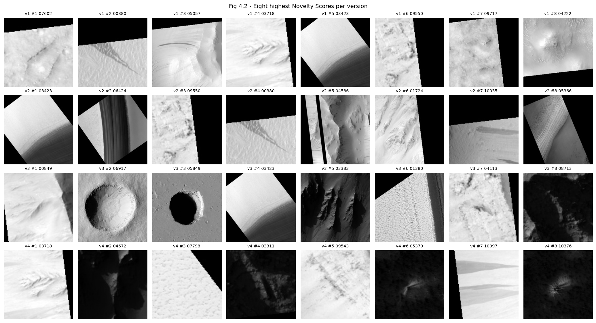
Rank of visually noticed spot-check crops in each version (diagnostic only, never used to set the threshold):
| crop | note | v1 rank | v1 flagged | v2 rank | v2 flagged | v3 rank | v3 flagged | v4 rank | v4 flagged |
|---|---|---|---|---|---|---|---|---|---|
| sample_00015.jpg | black bar | 4499 | False | 3859 | False | 1120 | False | 2833 | False |
| sample_00503.jpg | two streaks | 7419 | False | 5171 | False | 2211 | False | 3158 | False |
| sample_00676.jpg | dead-pixel blocks | 1571 | True | 1915 | True | 304 | False | 872 | False |
| sample_09828.jpg | Pentagon (terrestrial) | 2875 | False | 2275 | False | 47 | True | 488 | True |
| sample_05508.jpg | terrestrial buildings | 2681 | False | 2494 | False | 354 | False | 512 | False |
| sample_06476.jpg | periodic grid | 10225 | False | 5839 | False | 11 | True | 178 | True |
| sample_07971.jpg | periodic grid | 7163 | False | 3281 | False | 21 | True | 815 | False |
| sample_05395.jpg | bright + thin line | 784 | True | 1735 | True | 12 | True | 743 | False |
| sample_00011.jpg | dark terrain (control) | 2157 | False | 1993 | False | 1297 | False | 368 | True |
| sample_00385.jpg | dark terrain (control) | 4448 | False | 2992 | False | 1451 | False | 1154 | False |
Every version uses identical data (10,422 crops), a random 90/10 split held out for loss curves, AdamW + one-cycle LR (max 1e-3), batch 64, 30 epochs, horizontal/vertical flip augmentation, bf16 autocast, seed 42, and the same Isolation Forest (500 trees, ψ = 256, 5 seeds averaged). Each version changes one thing, so its effect can be attributed.
Setup. 5× stride-2 conv encoder (32-64-128-256-256) → Linear → 256-d latent; mirrored transposed-conv decoder; loss = MSE.
Result. Held-out MSE 0.00189, SSIM 0.705 after 30 epochs (plateaued from epoch ~20).
Dune ripple trains, small-crater fields and rough ground are reconstructed as smooth grey gradients (outputs/v1/recon_grid.png, random crops 07869 and 01503). The error maps of normal crops are dominated by texture, not by anything anomalous.
Addressed one at a time: v2 changes only the loss (symptom 1); v3 addresses the no-data nuisance (symptom 2).
Change (loss only; architecture, data and schedule identical to v1).
Outcome.
| v1 | v2 | |
|---|---|---|
| held-out SSIM | 0.7053 | 0.7065 |
| held-out MSE | 0.00189 | 0.00228 |
| PCA components for 90 % latent variance | 44 | 36 |
| Spearman ρ(novelty, no-data fraction) | 0.63 | 0.66 |
| crops flagged by modified-z > 3.5 | 1,596 | 1,985 |
Crater rims are slightly crisper, but dune ripples (crop 01503) and small-crater fields are still reconstructed as smooth gradients, and held-out SSIM moved by only +0.001.
Diagnosis. The loss was not the binding constraint. The code has only 256 floats for 51,529 pixels (≈200× compression), squeezed through a single linear layer from an 8×8×256 map. The exact phase of a ripple field is high-entropy information that such a code cannot store. Whatever the loss, the decoder can only output the "texture class" with its details averaged out. Lesson: the loss decides how the unavoidable error is distributed; it cannot create information the bottleneck discarded. For anomaly detection this matters less than it first seemed. The latent only has to encode what kind of terrain a crop is, which it can do without reproducing every ripple.
The novelty histogram (outputs/v2/scores.png) is now clearly bimodal. The second mode (0.47-0.60) is almost entirely crops with a black no-data wedge. ρ(novelty, no-data fraction), already 0.63 under v1, rose to 0.66. The number flagged grew from 1,596 to 1,985, and every crop in the top 25 has a wedge.
Diagnosis. Both new loss terms are edge-sensitive. The wedge boundary is a 0 → bright step, the strongest gradient in the dataset, so SSIM and gradient-L1 reward the network for placing it exactly. The encoder therefore spends more of its (already scarce) capacity on wedge angle and position (the latent spectrum became more concentrated, 44 → 36 PCA components). In latent space, crops with unusual wedge geometry are the easiest to isolate. The wedge is an artefact of map-projecting the HiRISE strip, not terrain, so every one of those flags is a false positive by construction.
Stop showing the network the wedge. Detect no-data regions, fill them with the crop's median, and exclude them from the loss and error maps, keeping the v2 loss.
Change. A no-data mask per crop marks near-black (≤ 5) regions that survive a 5×5 opening, touch the crop border and cover at least 0.5 % of it, dilated by 2 px for JPEG ringing. The opening matters: thin interior dark lines, which could themselves be sensor-glitch anomalies, are deliberately not masked (outputs/nodata_check.png). Masked pixels are filled with the crop's valid-pixel median and excluded from every loss term, metric and error map. 19.7 % of crops have a mask, covering 18.8 % of those crops on average.
Outcome.
| v2 | v3 | |
|---|---|---|
| held-out SSIM (v3: valid pixels) | 0.7065 | 0.7195 |
| Spearman ρ(novelty, no-data fraction) | 0.66 | 0.11 |
| Spearman ρ(novelty, reconstruction error) | 0.08 | 0.44 |
| PCA components for 90 % latent variance | 36 | 190 |
| score distribution | bimodal | unimodal, right-skewed tail |
| flagged by modified-z > 3.5 | 1,985 (19 %) | 86 (0.83 %) |
| μ + 3σ (cross-check) | 45 | 95 |
| spot-check crop | v1 rank | v2 rank | v3 rank |
|---|---|---|---|
| 06476 periodic grid | 10,225 | 5,839 | 11 |
| 07971 periodic grid | 7,163 | 3,281 | 21 |
| 09828 Pentagon (terrestrial) | 2,875 | 2,275 | 47 |
| 05395 bright terrain + thin dark line | 784 | 1,735 | 12 |
During the sanity pass we noticed crops with obvious synthetic defects: a thick black bar (00015), two black streaks (00503) and square dead-pixel blocks (00676). These are qualitative spot checks we saw by eye; we used them only to diagnose, never to tune the threshold. v3 ranks them 1,120th, 2,211th and 304th, far below the 86 flagged, even though their reconstruction error is visibly concentrated on the defect. A secondary residual: 41 of the 86 flagged crops still have a (filled) wedge, against a 20 % base rate. A large perfectly flat region is itself uncommon.
The bottleneck is one global linear layer from the whole 8×8×256 feature map to 256 numbers, and that layer is trained to summarise normal terrain. A defect covering about 2 % of the pixels barely moves this global summary: the encoder projects the crop onto the normal-terrain manifold and "forgets" the bar. The decoder then reproduces clean terrain, which is why the defect shows up in the residual but not in the latent. Latent-density detection with a global code is sensitive to scene-level novelty (Earth imagery, alien textures) and blind to local defects (glitches, splice seams).
Keep the information local. Replace the global linear bottleneck with a spatial bottleneck, a 1×1 convolution to an 8×8 grid of 4 channels, flattened to the same 256-d 1-D vector. Each coordinate then describes one ~63 px neighbourhood, so a local defect drives a few coordinates to extreme values, which is exactly what an Isolation Forest's axis-aligned random splits isolate fastest.
Change. The encoder's 8×8×256 map is reduced by a 1×1 convolution to 8×8×4 and flattened to a 256-d 1-D latent. The latent size, compression ratio, loss, masking and schedule are all as in v3. Dropping the two 16,384×256 linear layers cuts the model from 11.1 M to 2.7 M parameters.
Outcome - the hypothesis failed.
| v3 | v4 | |
|---|---|---|
| held-out SSIM (valid pixels) | 0.7195 | 0.7159 |
| flagged by modified-z > 3.5 | 86 | 510 |
| Spearman ρ(novelty, reconstruction error) | 0.44 | 0.22 |
| Spearman ρ(novelty, deviation from typical brightness) | 0.36 | 0.66 |
| share of flagged crops among the 5 % darkest + 5 % brightest | 58 % | 97 % |
| rank of black bar / two streaks / dead-pixel blocks | 1,120 / 2,211 / 304 | 2,833 / 3,158 / 872 |
| rank of Pentagon / periodic grids | 47 / 11, 21 | 488 / 178, 815 |
The local glitches did not move up; they moved down. The content anomalies that v3 caught (the Pentagon, the periodic grids) were pushed out of the flagged set, and the flagged set grew six-fold. It is now almost entirely very dark or very bright scenes (outputs/v4_flagged_grid.png), which is exactly the "brightness heuristic" failure the organisers warned about.
With only 4 channels per cell and no mixing across cells, each coordinate becomes a local albedo / local gradient descriptor. An Isolation Forest isolates points that are extreme along individual coordinates, and in a code made of local-albedo features the most extreme crops are simply the darkest and brightest scenes. The injected defects are anomalous in their configuration (a perfectly straight dark bar, square blocks, a regular grid), not in their local brightness. At the scale of a 63 px cell, a black bar is about as dark as an ordinary shadow, so none of its coordinates is extreme. The global code of v3 can represent "this scene contains an unnatural structure", because its linear layer combines evidence across the whole crop. The per-cell code cannot.
Revert to v3 as the final model. v4 stays in the journal as a documented negative result. The choice is made on label-free evidence: v3's novelty agrees better with what the decoder fails to explain (ρ 0.44 vs 0.22), it depends much less on raw brightness, and its score distribution gives a small tail on which the robust and Gaussian rules agree (86 vs 95). The spot checks only corroborate this.
Remaining limitation (honest). Recall is incomplete. A second Earth image (an aerial view of buildings, crop 05508, spotted in v4's grid) ranks 354th under v3 and is not flagged. Small local defects are still missed by latent-space scoring in every version. The decoder residual catches two of the three: the black bar and the two streaks are in the top 1 % of reconstruction error, with their error lying along the defect (Fig 3.1b). The dead-pixel blocks are invisible even there (53rd percentile). Residual-based or patch-level scoring is therefore a promising extension, but not a complete answer. v3 also keeps some brightness bias: 58 % of its flags lie in the brightness extremes, against a 10 % base rate. Some of that is genuine, because unusually bright or dark terrain (frost, deep shadow) is rarer.
| filename | source_image_id | novelty | recon_mse | latitude | longitude | sun_angle | season | resolution |
|---|---|---|---|---|---|---|---|---|
| sample_00849.jpg | SRC_022 | 0.5868 | 0.0022 | 20.0000 | 180.0000 | 41.5136 | N-spring | 0.2500 |
| sample_06917.jpg | SRC_122 | 0.5819 | 0.0029 | -5.0000 | 180.0000 | 57.3105 | N-summer | 0.2500 |
| sample_05849.jpg | SRC_008 | 0.5801 | 0.0022 | 25.0000 | 180.0000 | 61.0059 | N-autumn | 0.2500 |
| sample_03423.jpg | SRC_128 | 0.5789 | 0.0010 | 90.0000 | 0.0000 | 56.6348 | N-spring | 0.5000 |
| sample_03383.jpg | SRC_067 | 0.5773 | 0.0033 | -15.0000 | 180.0000 | 64.7242 | N-spring | 0.5000 |
| sample_01380.jpg | SRC_039 | 0.5758 | 0.0043 | 90.0000 | 0.0000 | 70.6328 | N-summer | 0.5000 |
| sample_04113.jpg | SRC_164 | 0.5741 | 0.0027 | 20.0000 | 180.0000 | 59.2269 | N-autumn | 0.2500 |
| sample_08713.jpg | SRC_032 | 0.5730 | 0.0019 | -5.0000 | 180.0000 | 52.4902 | N-spring | 0.2500 |
| sample_06963.jpg | SRC_166 | 0.5716 | 0.0051 | 90.0000 | 0.0000 | 60.0942 | N-spring | 0.5000 |
| sample_05326.jpg | SRC_131 | 0.5700 | 0.0010 | 10.0000 | 180.0000 | 60.5405 | N-autumn | 0.5000 |
| sample_06476.jpg | SRC_158 | 0.5665 | 0.0295 | -5.0000 | 180.0000 | 35.9541 | N-winter | 0.2500 |
| sample_05395.jpg | SRC_024 | 0.5664 | 0.0067 | 10.0000 | 180.0000 | 53.7258 | N-summer | 0.2500 |
| sample_05994.jpg | SRC_072 | 0.5661 | 0.0029 | 15.0000 | 180.0000 | 46.9668 | N-winter | 0.2500 |
| sample_08731.jpg | SRC_039 | 0.5660 | 0.0027 | 90.0000 | 0.0000 | 70.6328 | N-summer | 0.5000 |
| sample_02344.jpg | SRC_083 | 0.5660 | 0.0020 | 0.0000 | 180.0000 | 55.3789 | N-spring | 0.2500 |
| sample_02790.jpg | SRC_101 | 0.5643 | 0.0044 | 5.0000 | 180.0000 | 48.4794 | N-winter | 0.2500 |
| sample_00307.jpg | SRC_047 | 0.5632 | 0.0015 | 0.0000 | 180.0000 | 48.0287 | N-spring | 0.5000 |
| sample_01094.jpg | SRC_111 | 0.5627 | 0.0026 | -35.0000 | 180.0000 | 79.0699 | N-spring | 1.0000 |
| sample_09453.jpg | SRC_032 | 0.5625 | 0.0040 | -5.0000 | 180.0000 | 52.4902 | N-spring | 0.2500 |
| sample_07744.jpg | SRC_078 | 0.5597 | 0.0020 | 15.0000 | 180.0000 | 40.4370 | N-spring | 0.2500 |
| sample_07971.jpg | SRC_078 | 0.5589 | 0.0157 | 15.0000 | 180.0000 | 40.4370 | N-spring | 0.2500 |
| sample_04696.jpg | SRC_039 | 0.5586 | 0.0042 | 90.0000 | 0.0000 | 70.6328 | N-summer | 0.5000 |
| sample_02718.jpg | SRC_123 | 0.5578 | 0.0054 | 0.0000 | 180.0000 | 54.5981 | N-autumn | 0.5000 |
| sample_08621.jpg | SRC_039 | 0.5568 | 0.0048 | 90.0000 | 0.0000 | 70.6328 | N-summer | 0.5000 |
| sample_05036.jpg | SRC_104 | 0.5557 | 0.0022 | 25.0000 | 180.0000 | 45.1020 | N-summer | 0.5000 |
| sample_06424.jpg | SRC_039 | 0.5545 | 0.0033 | 90.0000 | 0.0000 | 70.6328 | N-summer | 0.5000 |
| sample_07875.jpg | SRC_140 | 0.5541 | 0.0014 | 35.0000 | 180.0000 | 44.8556 | N-spring | 0.2500 |
| sample_07170.jpg | SRC_039 | 0.5541 | 0.0048 | 90.0000 | 0.0000 | 70.6328 | N-summer | 0.5000 |
| sample_04017.jpg | SRC_083 | 0.5529 | 0.0019 | 0.0000 | 180.0000 | 55.3789 | N-spring | 0.2500 |
| sample_00606.jpg | SRC_083 | 0.5526 | 0.0014 | 0.0000 | 180.0000 | 55.3789 | N-spring | 0.2500 |
| sample_08200.jpg | SRC_140 | 0.5526 | 0.0014 | 35.0000 | 180.0000 | 44.8556 | N-spring | 0.2500 |
| sample_09543.jpg | SRC_094 | 0.5519 | 0.0016 | 20.0000 | 180.0000 | 66.9345 | N-autumn | 0.2500 |
| sample_09777.jpg | SRC_070 | 0.5516 | 0.0021 | 60.0000 | 180.0000 | 58.7890 | N-summer | 0.5000 |
| sample_03118.jpg | SRC_155 | 0.5510 | 0.0071 | -5.0000 | 180.0000 | 59.1175 | N-summer | 0.2500 |
| sample_03708.jpg | SRC_039 | 0.5510 | 0.0040 | 90.0000 | 0.0000 | 70.6328 | N-summer | 0.5000 |
| sample_07663.jpg | SRC_039 | 0.5510 | 0.0043 | 90.0000 | 0.0000 | 70.6328 | N-summer | 0.5000 |
| sample_02760.jpg | SRC_052 | 0.5499 | 0.0050 | 5.0000 | 180.0000 | 51.7054 | N-summer | 0.2500 |
| sample_05733.jpg | SRC_039 | 0.5497 | 0.0040 | 90.0000 | 0.0000 | 70.6328 | N-summer | 0.5000 |
| sample_03718.jpg | SRC_022 | 0.5490 | 0.0016 | 20.0000 | 180.0000 | 41.5136 | N-spring | 0.2500 |
| sample_09357.jpg | SRC_072 | 0.5489 | 0.0014 | 15.0000 | 180.0000 | 46.9668 | N-winter | 0.2500 |
| sample_09067.jpg | SRC_039 | 0.5489 | 0.0041 | 90.0000 | 0.0000 | 70.6328 | N-summer | 0.5000 |
| sample_04629.jpg | SRC_039 | 0.5482 | 0.0049 | 90.0000 | 0.0000 | 70.6328 | N-summer | 0.5000 |
| sample_08138.jpg | SRC_028 | 0.5467 | 0.0012 | 10.0000 | 180.0000 | 42.8948 | N-spring | 0.2500 |
| sample_06777.jpg | SRC_114 | 0.5463 | 0.0017 | -10.0000 | 180.0000 | 58.1765 | N-autumn | 0.5000 |
| sample_01653.jpg | SRC_067 | 0.5460 | 0.0030 | -15.0000 | 180.0000 | 64.7242 | N-spring | 0.5000 |
| sample_07428.jpg | SRC_166 | 0.5457 | 0.0033 | 90.0000 | 0.0000 | 60.0942 | N-spring | 0.5000 |
| sample_09828.jpg | SRC_156 | 0.5448 | 0.0210 | 10.0000 | 180.0000 | 48.7374 | N-summer | 0.2500 |
| sample_09498.jpg | SRC_067 | 0.5434 | 0.0033 | -15.0000 | 180.0000 | 64.7242 | N-spring | 0.5000 |
| sample_04516.jpg | SRC_067 | 0.5430 | 0.0019 | -15.0000 | 180.0000 | 64.7242 | N-spring | 0.5000 |
| sample_05582.jpg | SRC_166 | 0.5426 | 0.0046 | 90.0000 | 0.0000 | 60.0942 | N-spring | 0.5000 |
| sample_06820.jpg | SRC_106 | 0.5424 | 0.0028 | 25.0000 | 180.0000 | 40.6390 | N-spring | 0.5000 |
| sample_10319.jpg | SRC_094 | 0.5420 | 0.0015 | 20.0000 | 180.0000 | 66.9345 | N-autumn | 0.2500 |
| sample_08392.jpg | SRC_070 | 0.5416 | 0.0022 | 60.0000 | 180.0000 | 58.7890 | N-summer | 0.5000 |
| sample_06428.jpg | SRC_039 | 0.5416 | 0.0055 | 90.0000 | 0.0000 | 70.6328 | N-summer | 0.5000 |
| sample_08001.jpg | SRC_139 | 0.5414 | 0.0035 | 40.0000 | 180.0000 | 53.5333 | N-winter | 0.2500 |
| sample_07701.jpg | SRC_136 | 0.5412 | 0.0170 | -35.0000 | 180.0000 | 76.9224 | N-spring | 0.5000 |
| sample_06351.jpg | SRC_106 | 0.5412 | 0.0021 | 25.0000 | 180.0000 | 40.6390 | N-spring | 0.5000 |
| sample_01724.jpg | SRC_140 | 0.5410 | 0.0021 | 35.0000 | 180.0000 | 44.8556 | N-spring | 0.2500 |
| sample_03918.jpg | SRC_108 | 0.5407 | 0.0025 | -40.0000 | 180.0000 | 68.8563 | N-summer | 0.5000 |
| sample_05584.jpg | SRC_039 | 0.5407 | 0.0049 | 90.0000 | 0.0000 | 70.6328 | N-summer | 0.5000 |
| sample_09975.jpg | SRC_067 | 0.5393 | 0.0009 | -15.0000 | 180.0000 | 64.7242 | N-spring | 0.5000 |
| sample_00473.jpg | SRC_067 | 0.5390 | 0.0016 | -15.0000 | 180.0000 | 64.7242 | N-spring | 0.5000 |
| sample_05368.jpg | SRC_140 | 0.5389 | 0.0015 | 35.0000 | 180.0000 | 44.8556 | N-spring | 0.2500 |
| sample_06335.jpg | SRC_052 | 0.5386 | 0.0010 | 5.0000 | 180.0000 | 51.7054 | N-summer | 0.2500 |
| sample_04902.jpg | SRC_123 | 0.5386 | 0.0060 | 0.0000 | 180.0000 | 54.5981 | N-autumn | 0.5000 |
| sample_05284.jpg | SRC_166 | 0.5385 | 0.0034 | 90.0000 | 0.0000 | 60.0942 | N-spring | 0.5000 |
| sample_01216.jpg | SRC_078 | 0.5382 | 0.0027 | 15.0000 | 180.0000 | 40.4370 | N-spring | 0.2500 |
| sample_10097.jpg | SRC_022 | 0.5374 | 0.0008 | 20.0000 | 180.0000 | 41.5136 | N-spring | 0.2500 |
| sample_06196.jpg | SRC_103 | 0.5372 | 0.0037 | -35.0000 | 180.0000 | 57.0904 | N-autumn | 0.2500 |
| sample_07084.jpg | SRC_168 | 0.5367 | 0.0017 | 90.0000 | 0.0000 | 64.7096 | N-summer | 0.2500 |
| sample_06410.jpg | SRC_074 | 0.5358 | 0.0029 | 0.0000 | 180.0000 | 50.2546 | N-spring | 0.5000 |
| sample_00413.jpg | SRC_050 | 0.5342 | 0.0017 | 0.0000 | 180.0000 | 53.6801 | N-summer | 0.2500 |
| sample_06220.jpg | SRC_166 | 0.5341 | 0.0015 | 90.0000 | 0.0000 | 60.0942 | N-spring | 0.5000 |
| sample_07299.jpg | SRC_094 | 0.5341 | 0.0030 | 20.0000 | 180.0000 | 66.9345 | N-autumn | 0.2500 |
| sample_03147.jpg | SRC_058 | 0.5339 | 0.0009 | 30.0000 | 180.0000 | 69.0609 | N-autumn | 0.5000 |
| sample_10203.jpg | SRC_166 | 0.5332 | 0.0032 | 90.0000 | 0.0000 | 60.0942 | N-spring | 0.5000 |
| sample_03515.jpg | SRC_131 | 0.5330 | 0.0011 | 10.0000 | 180.0000 | 60.5405 | N-autumn | 0.5000 |
| sample_05004.jpg | SRC_091 | 0.5324 | 0.0031 | -40.0000 | 180.0000 | 72.5113 | N-summer | 0.5000 |
| sample_00824.jpg | SRC_067 | 0.5323 | 0.0012 | -15.0000 | 180.0000 | 64.7242 | N-spring | 0.5000 |
| sample_08152.jpg | SRC_131 | 0.5312 | 0.0004 | 10.0000 | 180.0000 | 60.5405 | N-autumn | 0.5000 |
| sample_01916.jpg | SRC_139 | 0.5311 | 0.0034 | 40.0000 | 180.0000 | 53.5333 | N-winter | 0.2500 |
| sample_06380.jpg | SRC_111 | 0.5304 | 0.0040 | -35.0000 | 180.0000 | 79.0699 | N-spring | 1.0000 |
| sample_04060.jpg | SRC_032 | 0.5303 | 0.0010 | -5.0000 | 180.0000 | 52.4902 | N-spring | 0.2500 |
| sample_05800.jpg | SRC_023 | 0.5297 | 0.0085 | -10.0000 | 180.0000 | 50.8374 | N-spring | 0.2500 |
| sample_10092.jpg | SRC_022 | 0.5295 | 0.0009 | 20.0000 | 180.0000 | 41.5136 | N-spring | 0.2500 |
| sample_02823.jpg | SRC_094 | 0.5295 | 0.0008 | 20.0000 | 180.0000 | 66.9345 | N-autumn | 0.2500 |